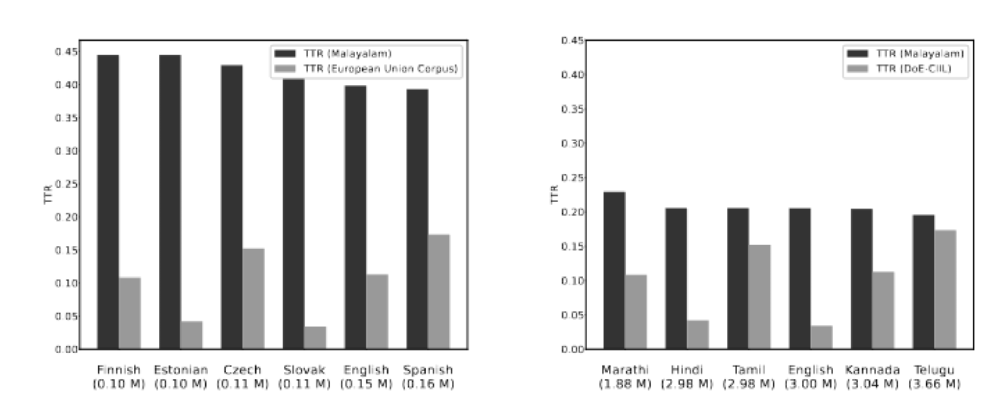

TTGR and TTR plot of Malayalam for SMC Corpus of Wikipedia text from K. Manohar et al.

Comparison of Malayalam TTR with that of European Union Constitution Corpus and DoE-CIIL Corpus from K. Manohar et al.
Malayalam_asr_benchmarking project
Whisper Event
HuggingFace Team conducted a whisper fine tuning event for 2 weeks from 5th December 2022 to 19th December 2022. The results were out on 23rd December 2022.
The goal was to to fine-tune the Whisper model to build state-of-the-art speech recognition systems in the languages of our choice üó£
Malayalam models in Whisper Event
For the language Malayalam, the results are as follows:
Malayalam models performance in whisper event according to leaderboard
Winning models in Malayalam in Whisper Event
The winning model for Common voice: thennal/whisper-medium-ml
The winning model for Fleurs: parambharath/whisper-small-ml
I was not convinced
I was sceptical about the winning models becuase of:
Achieving 10% WER in Malayalam is astonishing.
In Malayalam there is not even a single yard stick to compare. Most of previous works were done in proprietary datasets and not open-sourced.
faster-whisper is a reimplementation of OpenAI’s Whisper model using CTranslate2, which is a fast inference engine for Transformer models.
This implementation is up to 4 times faster than openai/whisper for the same accuracy while using less memory. The efficiency can be further improved with 8-bit quantization on both CPU and GPU.
CTranslate2
It had this utility for converting any whisper based model to faster-whisper like models.